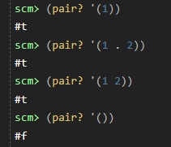
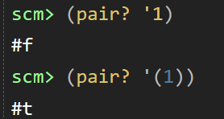
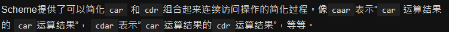
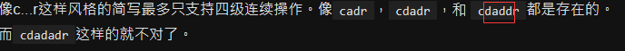
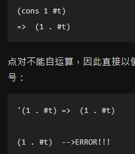
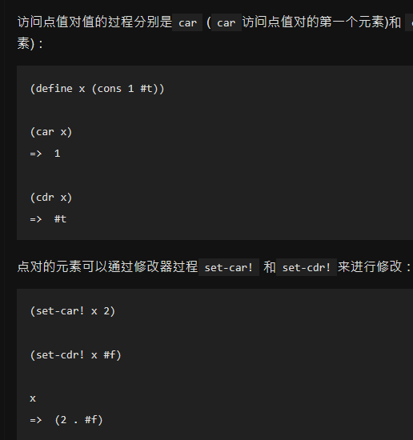
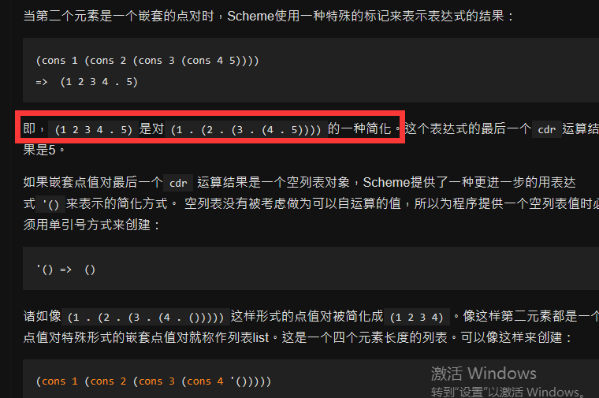
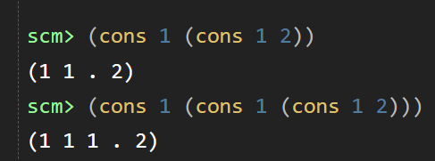

Scheme-Syntax Start
scheme不同版本的输出可能有出入，cs61a网版用不了char?,不识别symbol大小写是正常的，而本地版却区分eqv? 'C 'c
-
 
-
 
-
cons的用法--construct
(cons <"symbol1"> <"symbol2">) 只能有两个参数
-
2.2.3 Dotted pairs(点对) 和 lists(列表)
  
点对是将两个任意数值组合成有序数偶的复合类型。点对的第一个数值被称作car，第二值被称作cdr，而将两个值组合成点值对的过程是cons。 本质上还是两两之间有.的，只是省略了而已
现有pair后有list,pair是一起放进去，只有2个坑，list是永远都是2个坑，1个放当前，1个是空坑，给后面不断嵌套
Scheme中表(list)和序对(pair)的差别car 和 cdr 分别是寄存器地址部分（Contents of the Address part of the Register）和寄存器减量部分（Contents of the Decrement part of the Register）的简称